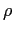
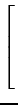
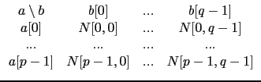
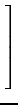

suivant: Covariance et corrélation :
monter: Les fonctions statistiques à
précédent: La covariance : covariance
Table des matières
Index
La corrélation : correlation
Le coefficient de corrélation linéaire de deux variables aléatoires
X et Y est
 =  où
où
 (X) (resp (Y)) désigne l'écart-type de X (respY).
(X) (resp (Y)) désigne l'écart-type de X (respY).
correlation a les mêmes arguments que covariance.
Quand les effectifs sont égaux à 1,
correlation a pour argument deux listes de même longueur ou une matrice
ayant deux colonnes.
On tape :
correlation([1,2,3,4],[1,4,9,16])
On obtient :
100/(4*sqrt(645))
On tape :
correlation([[1,1],[2,4],[3,9],[4,16]])
On obtient :
100/(4*sqrt(645))
On tape (on a A:=[0,1,2,3,4,5,6,7,8,9,10,11]) :
correlation(A,A^2)
On obtient :
18876/(572*sqrt(1173))
Quand les effectifs sont différents de 1 :
- si les couples a[j], b[j] ont pour
effectif n[j] (j = 0..p - 1), correlation a pour argument
trois listes a, b, n de même longueur p, ou
une matrice de trois colonnes a,
b, n et de p lignes
[a[j], b[j], n[j]].
correlation calcule la corrélation numérique des deux premières
listes qui sont pondérées par la liste donnée comme dernier argument ou
calcule la corrélation numérique des deux colonnes de cette matrice qui
sont pondérées par la troisiéme colonne.
On tape :
correlation([1,2,3,4],[1,4,9,16],[3,1,5,2])
Ou on tape :
correlation([[1,1,3],[2,4,1],[3,9,5],[4,16,2]])
On obtient :
662/(180*sqrt(14))
- si les couples a[j], b[k] ont pour effectif N[j, k] (
j = 0..p - 1, k = 0..q - 1),
correlation a pour argument deux listes a, b de longueurs respectives
p et q et une matrice N de p lignes et q colonnes ou encore,
afin de pouvoir écrire les données de façon plaisante dans le tableur,
correlation peut aussi avoir pour argument, une matrice M et -1.
M est alors un tableau à deux entrées égal à :
M = 
correlation(a,b,N) ou correlation(M,-1) calcule la corrélation
numérique des couples a[j], b[k] pondérés par Nj, k.
On tape :
correlation([1,2,3,4],[1,4,9,16],[[3,0,0,0],[0,1,0,0],
[0,0,5,0],[0,0,0,2]])
On obtient :
662/(180*sqrt(14))
On tape :
correlation([["b a",1,2,3,4],[1,3,0,0,0],
a",1,2,3,4],[1,3,0,0,0],
[4,0,1,0,0],[9,0,0,5,0],[16,0,0,0,2]],-1)
On obtient :
662/(180*sqrt(14))
suivant: Covariance et corrélation :
monter: Les fonctions statistiques à
précédent: La covariance : covariance
Table des matières
Index
Documentation de giac écrite par Renée De Graeve